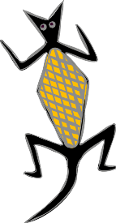

|

Swampy Home
|
Swampy
Install Swampy
Swampy is a suite of Python programs for use with
Think Python,
Python for Software Design, and
The Little Book of
Semaphores.
It was written by Allen
Downey and is available under the GNU General Public License
(GPL).
Swampy includes these components:
-
AmoebaWorld Provides a fun
environment to practice writing Python expressions and to introduce
object-oriented programming.
-
TurtleWorld
An implementation of turtle graphics
used to teach procedural interface design and
object-oriented programming.
-
TurmiteWorld
Allows students to experiment with
cellular automata and finite state machines, including
Langton's Ant.
(The misspelling of "termite" is deliberate; it is a tribute to
Alan Turing).
-
Sync
A simulator that
demonstrates the execution of multithreaded programs that interact
through Semaphores. Sync is designed to run the examples and solutions from
The Little Book of
Semaphores.
-
Lumpy
Lumpy stands for "UML in Python".
It generates UML class diagrams and UML object diagrams from a Python
program.
Documentation
FAQ
What is Swampy for?
Swampy provides an environment for a range of exercises related to
Software Engineering:
- Lumpy generates UML diagrams, helping student
understand object-reference semantics and
software design (especially object-oriented design).
- AmoebaWorld is used to develop basic programming skills and
provide a gentle introduction to object-oriented programming.
- TurtleWorld is used to teach multi-level interface design
(for example, designing a library of primitive functions and using
it to implement a higher level library).
- TurmiteWorld is a sandbox for experimenting with cellular automata
and finite state machines.
- Sync is a simulator that provides a model of synchronized
concurrent threads.
These components are used throughout the Engineering with Computing
(E:C) curriculum at Olin College.
What is "Engineering with Computing"?
Engineering with Computing (E:C) is a four-year program in engineering
with a concentration in computing.
It is described in the E:C FAQ, and
in our paper
"Designing a
small-footprint curriculum in computer science", which appeared
at FIE 2006.
Is Swampy courseware or a programming environment?
Both. In fact, one of the goals of Swampy is to blur the line
between using software and programming. AmoebaWorld and TurtleWorld
take students through a gradual introduction to programming:
- Initially, students use a graphical user interface to control
Amoebas and Turtles. At the same time they are learning the
elements of the programmer interface for these objects.
- In AmoebaWorld, students translate mathematical expressions into
Python in order to control Amoebas.
- In TurtleWorld, students write program fragments in a GUI and
execute them by pressing a button.
- Next, students write longer scripts in separate
files, but run them through a GUI.
- Later, students write stand-alone Python programs that import
Swampy modules.
- Finally, students use inheritance to modify and extend the
behavior of Swampy itself.
This progression is intended to break down the barrier between
users and programmers, and demonstrate a wide range of programming
activities.
Parts of Swampy seem pretty bare-bones. Why doesn't it
have more of the features I expect in a programming environment?
Because one of the best ways to learn to program is by reading code,
so Swampy is designed to be read. For example, in many places the
program is written using only the features students have already seen.
Swampy is intended to demonstrate a variety of
patterns in object-oriented design. In most cases it demonstrates
what I think is good design, but there are a few weaknesses I
use as case studies.
Swampy is reflexive; that is, it can be used to study itself.
Lumpy generates UML diagrams that help students understand the
structure of Swampy, including Lumpy!
Install Swampy
|
Are you using Swampy in a class? We'd like to know
about it. Please consider filling out this short survey.
|